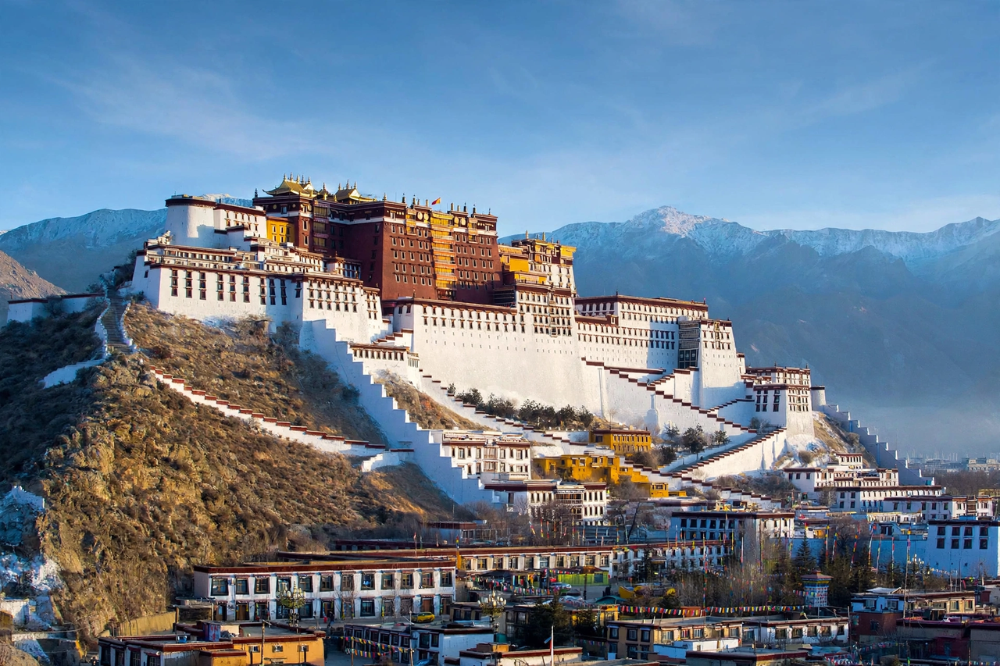

Tibet

[Image: Photograph of the Potala Palace in Lhasa rising above the city]
Tibet is a high plateau region in Asia, north of the Himalayas, often called the “Roof of the World” for its average elevation of around 4,500–4,900 metres. Historically a distinct cultural and political region centred on Lhasa, most of it is today administered as the Tibet Autonomous Region of China, with Tibetan cultural areas also extending into neighbouring Chinese provinces and Himalayan states.
Geography
The Tibetan Plateau is the source of many of Asia's great rivers, including the Indus, Brahmaputra (Yarlung Tsangpo), Mekong and Yangtze headwaters. Its climate is cold and dry, and the plateau is bounded by the Himalayas to the south and the Kunlun range to the north.
History and culture
Tibetan Buddhism, introduced from the 7th century onwards and dominant from the era of the later diffusion, profoundly shaped Tibetan society; the Dalai Lamas — from the 17th century — combined spiritual and temporal authority, based at the Potala Palace in Lhasa. After 1950–51 Tibet came under the administration of the People's Republic of China; the 14th Dalai Lama fled to India in 1959 following an uprising, and a large Tibetan exile community remains.